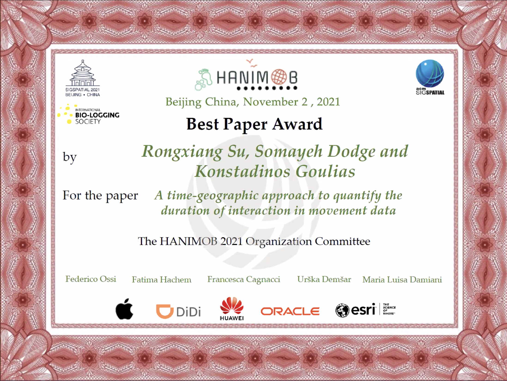
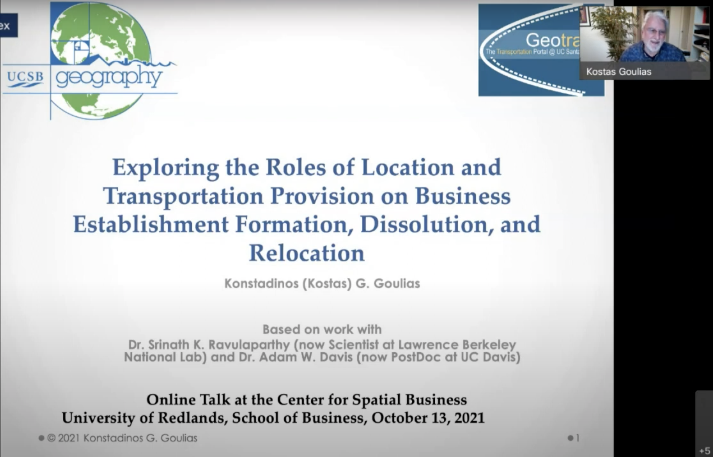
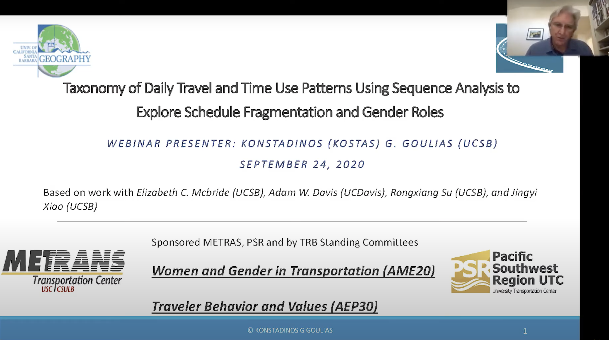

Geotrans lab students presented their research at the 2022 American Association of Geographers Annual Meeting during February 25-March 1 (online). Hui gave a presentation on "Spatial Clustering of Activity-Travel Fragmentation in California". Jingyi gave a presentation on "How public interest and concerns about autonomous vehicles change over time: A study of repeated crosssectional travel survey data of the Puget Sound Region in the Northwest United States". Rongxiang gave a presentation on "Understanding the Impact of Temporal Scale on Human Movement Analytics".
February, 2022
Jingyi gave a poster presentation on "Perceived Usefulness and Intentions to Adopt Autonomous Vehicles" at the 101st Annual Transportation Research Board Meeting on January 9-13, 2022 (virtual meeting).
January, 2022
Rongxiang gave a presentation on
"A time-geographic approach to quantify the duration of interaction in movement data" at the 1st ACM SIGSPATIAL International Workshop on Animal Movement Ecology and Human Mobility on November 2, 2021 (virtual meeting). He received a best paper award for his presentation!

November, 2021
Kostas gave a presentation on "Exploring the Roles of Location and Transportation Provision on Business Establishment Formation, Dissolution, and Relocation" at the Center for Spatial Business University of Redlands, School of Business. The video of the presentation is available on
Youtube.

Octorber, 2021
Kostas gave a presentation on "Spatial analysis with network tools and examples from freight flow analysis" at the Chaire Mobilite Colloque Annuel 2021 Polytechnique Montreal, Canada (virtual meeting).
May, 2021
Kostas gave a presentation on "Activity-based Models for Travel Demand Forecasting (Simulator of Activities, Greenhouse Gas Emissions, Networks, &Travel – SimAGENT)" at the University College London (virtual meeting) on April 27, 2021.
April, 2021
Rongxiang gave a presentation on
"An Exploration of human mobility motifs in the California component of the 2017 National Household Travel survey" at the 9th Symposium of the European Association for Research in Transportation on February 3-4, 2021. See the recording
here.
February, 2021
Kostas gave a presentation on
"Taxonomy of Daily Travel and Time Use Patterns Using Sequence Analysis to Explore Schedule Fragmentation and Gender Roles" at the University of Southern California METRANS (virtual meeting), Sep. 24, 2020. The video of the presentation is available on
Youtube.

September, 2020